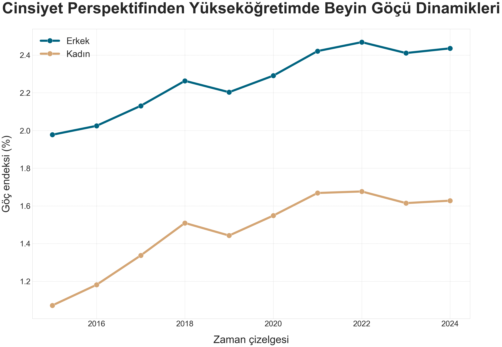
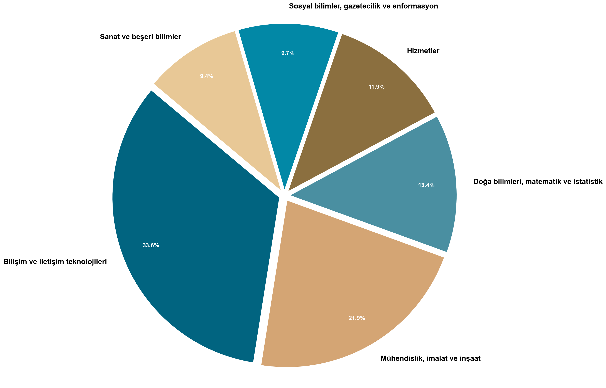
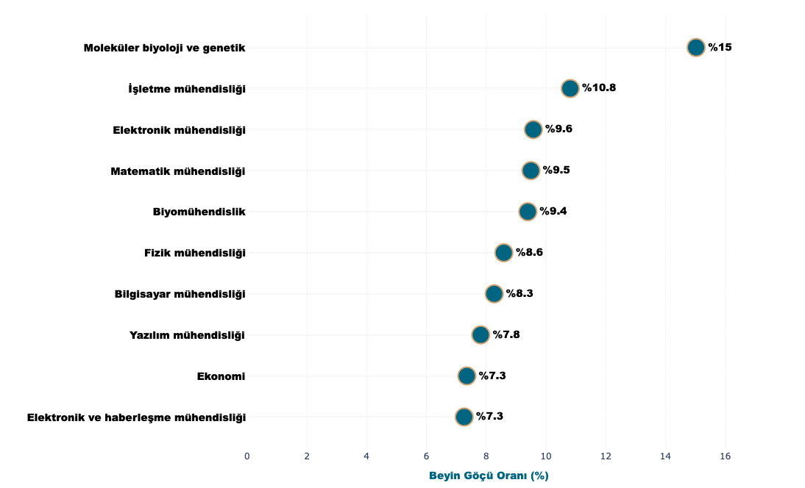
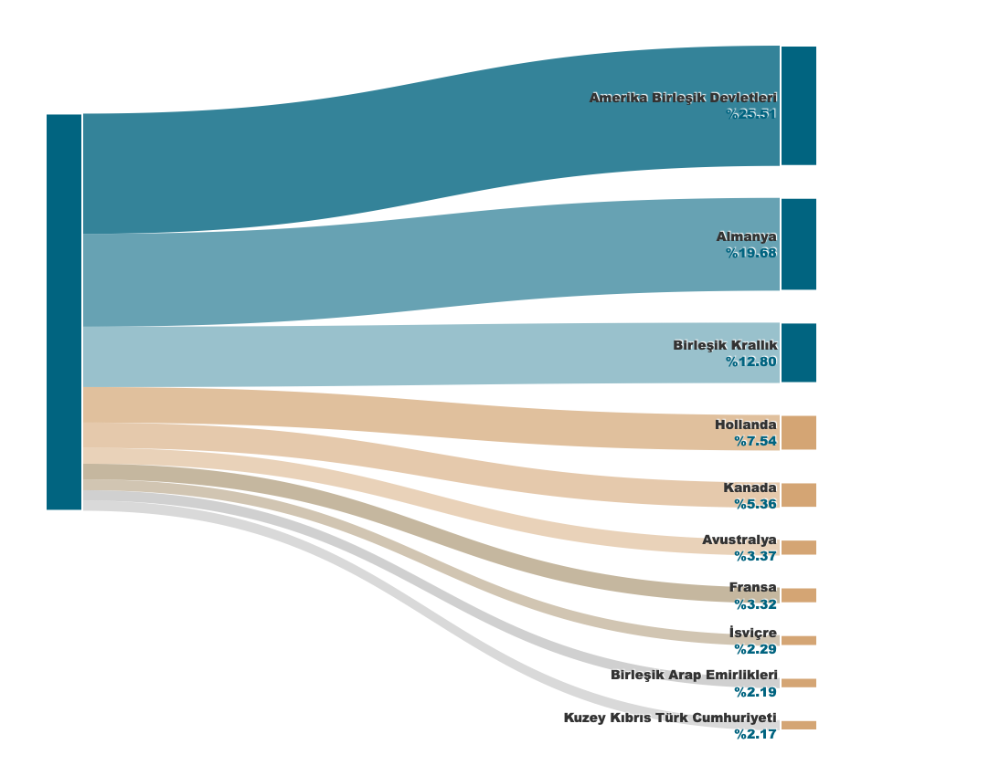
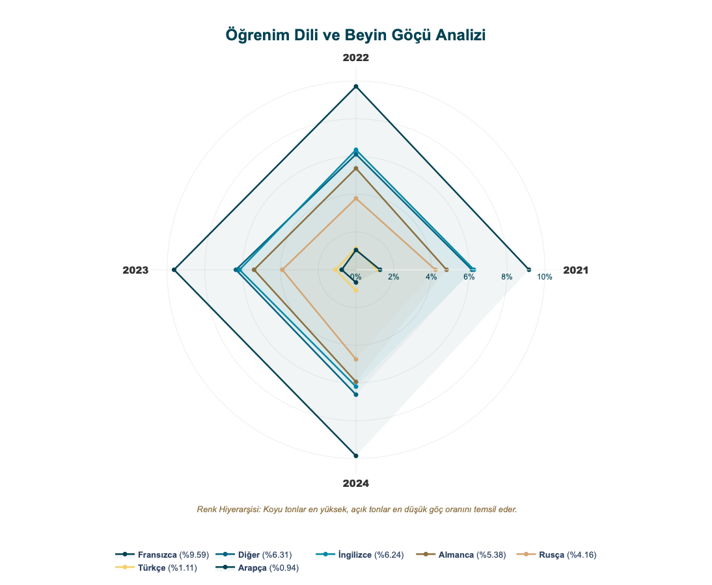

Cinsiyet Perspektifi
Erkek ve kadın mezunların beyin göçü eğilimleri karşılaştırmalı olarak gösteriliyor.

Türkiye'de 2015-2024 döneminde yükseköğretim mezunlarının beyin göçü hareketlerini, eğitim alanlarını, hedef ülkelerini ve öğrenim diline göre dağılımını modern bir arayüzde sunuyoruz.
Erkek ve kadın mezunların beyin göçü eğilimleri karşılaştırmalı olarak gösteriliyor.

2024 yılında hangi eğitim alanlarının daha yüksek göç oranına sahip olduğunu gösteren hızlı durum analizi.

2024'taki en yüksek beyin göçü oranına sahip bölümler; alan seçimi ve yetenek göçü ilişkisi.

Mezunların en çok tercih ettiği göç hedef ülkeleri; uzun dönemli dışa hareketin ülkeler bazındaki dağılımı.

Öğrenim diline göre beyin göçü oranları ve dili seçen mezun profillerinin görsel karşılaştırması.
